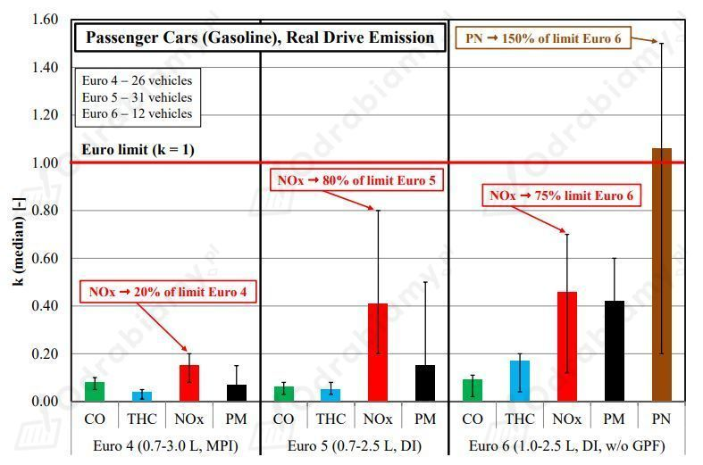
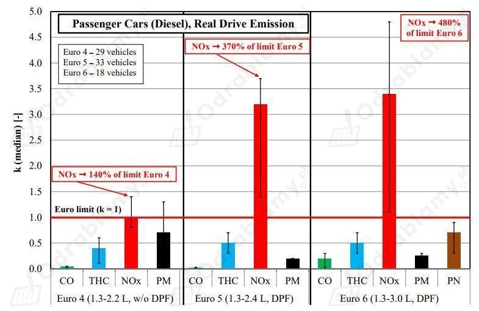
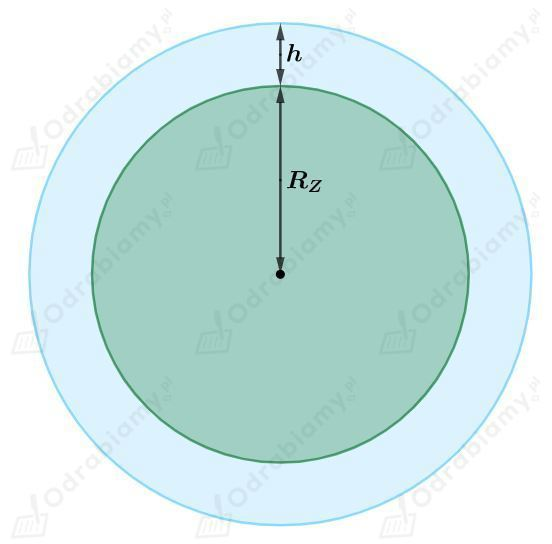
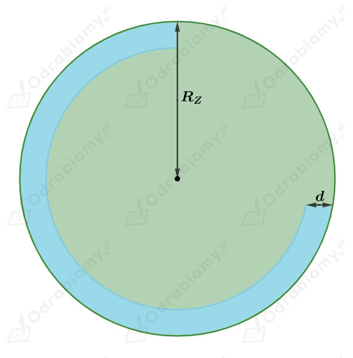

Średnia temperatura Wszechświata wynosi około 2,7 K i możemy mierzyć ją:
d) w falach radiowych
To docierające do nas promieniowanie z każdego kierunku we Wszechświecie nazywamy mikrofalowym promieniowaniem tła.
a) bardziej ekologiczny jest silnik Diesla (jest bardziej efektywny i spala mniej paliwa)
b) bardziej ekologiczny jest silnik benzynowy (emituje mniej zanieczyszczeń)
Potrzebne dane uzyskano z artykułu:
Merkisz, Jerzy, Jacek Pielecha, and Remigiusz Jasiński. "Ekologiczna ocena samochodów osobowych w drogowych testach emisyjnych." TTS Technika Transportu Szynowego 22 (2015).


Wskazane zanieczyszczenia (CO, THC, NOx, PM/PN) są składnikami smogu. Sumarycznie silniki Diesla uwalniają do atmosfery dużo więcej zanieczyszczeń, dlatego powodują intensywniej powstawanie smogu.
Silniki Diesla uwalniają również do atmosfery więcej dwutlenku węgla, który jest gazem cieplarnianym i powoduje zmiany klimatu.
Zero-emisyjność samochodów elektrycznych jest zależna od kraju, w którym taki samochód użytkujemy. Samochody elektryczne wymagają ładowania prądem elektrycznym, który jest wytwarzany w elektrowniach. W zależności od kraju produkowana energia elektryczna zazwyczaj nie jest czysta. W Polsce główną produkcję energii elektrycznej stanowią elektrownie węglowe, które emitują do atmosfery wiele zanieczyszczeń. Wytworzony w ten sposób prąd elektryczny posłuży do naładowania samochodu elektrycznego, który wtedy ciężko nazwać zeroemisyjnym. W innych krajach np. Norwegia (głównie elektrownie wodne) lub Francja (gównie elektrownie jądrowe) samochody elektryczne są bardziej "zeroemisyjne".
Temperatura na Wenus jest tak wysoka ze względu na bardzo silny efekt cieplarniany. Atmosfera Wenus jest bardzo gęsta i składa się głównie z dwutlenku węgla, dlatego energia cieplna jest zatrzymywana przy powierzchni tej planety i powoduje silny wzrost temperatury.
Dane:
Szukane:
Rozwiązanie:
Energia zmagazynowana w atmosferze i wodzie będzie równa ciepłu dostarczonemu do tych ośrodków potrzebnemu do ogrzania ich o jeden stopień Celsjusza.
Musimy wyznaczyć objętość atmosfery Ziemi.

Objętość atmosfery (powitrza) będzie równa różnicy objętości kul, których promienie są równe promieniowi Ziemi powiększonemu o grubość atmosfery i promieniowi Ziemi.
Objętość kuli wyrażamy jako:
Stąd objętość powietrza w atmosferze wyznaczymy jako:
Obliczmy masę powietrza w atmosferze:
Obliczmy energię zmagazynowaną w atmosferze:
Schematyczne zobrazowanie objętości wody w oceanach, która ulega ogrzaniu.

Objętość wody, która ulega ogrzaniu w oceanach będzie równa różnicy objętości kul o promieniu Ziemi i o promieniu Ziemi pomniejszonemu o podaną głębokość z uwzględnieniem 70% powierzchni Ziemi zajmowanej przez oceany.
Obliczmy masę wody jaka uległa ogrzaniu:
Obliczmy energię zmagazynowaną w oceanach:
Przyjmijmy teraz głębokość wody ogrzewanej w oceanach równą 100 m.
Obliczmy masę wody jaka uległa ogrzaniu:
Obliczmy energię zmagazynowaną w oceanach:
Przy podniesieniu średniej temperatury na Ziemi o 1°C dodatkowa energia zmagazynowana w atmosferze wyniesie około:
Dodatkowa energia zmagazynowana w oceanach dla przyjętej głębokości 10 m wyniesie około:
Dodatkowa energia zmagazynowana w oceanach dla przyjętej głębokości 100 m wyniesie około:
Zjawiska stanowiące dodatnie sprężenie zwrotne:
Zjawiska stanowiące ujemne sprężenie zwrotne:
Widma absorpcyjne:
Widmo emisyjne:
Widmo ciągłe: